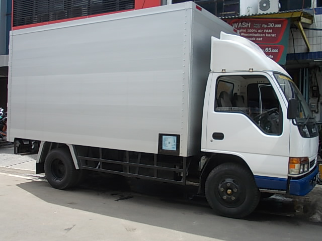
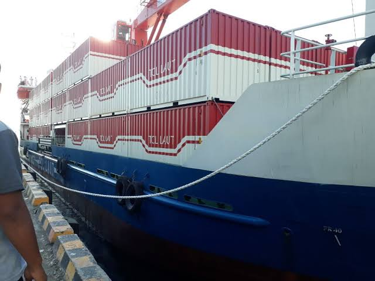

KirimIN Merupakan salah satu jasa pengiriman barang yang belum memiliki keunggulan yang bisa dipamerkan namun KirimIN memiliki sebuah inovasi inovasi keren yang membuat anda akan terkagum kagum, mulai dari kecepatan pengiriman, proses pengiriman dan lainnya yang pastinya akan membuat anda ingin menggunakan jasa kami kembali.
|  |  |
Ekspedisi Darat |
Ekspedisi Laut |
| KirimIN Cargo berdisi sejak 19 Oktober 2020, Sebagai tugas pemograman web 2020, KirimIN Cargo menyediakan pengiriman darat yang aman dengan harga yang lebih terjangkau, Sebagai pengiriman Cargo yang belum terlalu berpengalaman, Kirim IN Cargo tidak terlalu menjamin kecepatan dan ketepatan waktu. jika anda menginginkan pengiriman yang cepat, silahkan anda ambil sendiri barangnya dan terbang dengan baling baling bambu. | KirimIN Cargo juga menyediakan pengiriman via laut dengan menggunakan kapal ferri dengan tenaga dayung manual sehingga tidak memboroskan biaya dan salah satu sarana olahraga untuk ABK selainitu juga ketika kondisi air bagus dan bersahabat dengan lumba-lumba pengiriman bisa lebih cepat karena di bantu dorongan oleh kawanan lumba-lumba serta dorongan doa yang menantikan barang tentunya.seperti biasa jika pengirim barang menginginkan kecepatan yang lebih silahkan bisa langsung meminta bantuan ke Aquaman agar barang cepat sampai |
KirimIN juga memiliki beberapa cabang yang tersebar di kota kota di indonesia dengan kantor yang terletak strategis menjadikan KirimIN mudah di temukan
| |
|||
| Jakarta | Bandung | Jogja | Bali |